布局
- QBoxLayout。
- QGridLayout。
- QFormLayout。
- 缩放策略。
- QStackedLayout。
布局管理
尽管可以调用QWidget类（包括其子类）的 move、resize、setGeometry等方法来设定可视化组件的位置和大小，但当窗口中组件数量较多时就显得很烦琐。为了提高组建图形界面的效率，降低代码复杂度，便引入了“布局管理”。布局管理可实现QWidget对象以及其子级对象的自动排列和大小调整，充分利用组件的坐标空间。
在Qt中，布局管理可落实到QLayout类上面。该类是布局类型的公共基类，实现了最基础的布局管理。在代码中一般不会直接使用 QLayout 类，而是根据不同的布局方式选用 QLayout 的子类（如QBoxLayout、QHBoxLayout、QFormLayout、QGridLayout 等)。前面章节中使用过的 QButtonGroup 类也可以认为是一种布局。
所有QWidget的子类（包括QWidget类自身）都可以使用布局类。调用 setLayout方法即可设置布局对象。布局对象自身可以调用addWidget方法添加组件。只有被添加到布局的组件才会应用布局功能。一旦应用了新的布局，位于布局内的子级对象会重新定位，宽度和高度也可能被改变。同时，布局也会根据QWidget组件所显示的内容自动调整其大小，例如文本的换行、修改字体等。
“盒子”模型
盒子布局（Box Layout）是最简单的布局方式，对应的是QBoxLayout类。该布局只沿一个方向排列组件，每个组件都会分配到相等比例或不等比例的空间，组件的高度或宽度会根据分配的空间自动调整。就像把组件放进一个个盒子中，因此称为“盒子”模型。布局方向可以是水平的或垂直的，由QBoxLayout.Direction枚举的值来设定。
- LeftToRight:从左到右排列，属于水平布局。
- RightToLeft：从右到左排列，也属于水平布局。
- TopToBottom：从上到下排列，属于垂直布局。
- BottomToTop:从下到上排列，也属于垂直布局。
7.2.1 示例：QBoxLayout 的基本用法
本示例通过在 QBoxLayout 对象中添加5 个按钮来演示“盒子”布局的基本用法。5个 QPushButton 实例通过列表对象来创建，再使用for循环添加到QBoxLayout 对象中。关键代码如下：
self.myLayout = QBoxLayout(QBoxLayout.Direction.LeftToRight)
......
btns = [
QPushButton("按钮-1", self),
QPushButton("按钮-2", self),
QPushButton("按钮-3",self),
QPushButton("按钮-4", self),
QPushButton("按钮-5",self),
]
for b in btns:
self.myLayout.addWidget(b)为了能让读者直观地对比不同排列方向的差异，在窗口底部添加4个单选按钮（QRadioButton）组件，分别对应“从左到右”“从右到左”“从上到下”“从下到上”排列方向。这些QRadioButton对象将添加到QButtonGroup 对象中，集中触发 idToggled信号。
bmLayout = QHBoxLayout()
....
rdbtns = [
QRadioButton("从左到右", self),
QRadioButton("从右到左", self),
QRadioButton("从上到下",self),
QRadioButton("从下到上",self)
]
for r in rdbtns:
#添加到布局中
bmLayout.addWidget(r)
#添加到 QButtonGroup 对象中
self.btnGp = QButtonGroup(self)
for i in range(0, 4):
self.btnGp.addButton(rdbtns[i], i + 1)
#连接 idToggled信号
self.btnGp.idToggled.connect(self.onIdToggled)4 个 QRadioButton 对象在 QButtonGroup 中的 id 依次是 1、2、3、4。在处理 idToggled 信号的代码中将根据 id的值来改变 QBoxLayout 布局的排列方向。
下面的代码实现 onIdToggled方法：
def onIdToggled(self, id: int, checked: bool):
if checked:
if id == 1: #从左到右
self.myLayout.setDirection(QBoxLayout.Direction.LeftToRight)
elif id == 2: # 从右到左
self.myLayout.setDirection(QBoxLayout.Direction.RightToLeft)
elif id == 3: # 从上到下
self.myLayout.setDirection(QBoxLayout.Direction.TopToBottom)
elif id == 4: # 从下到上
self.myLayout.setDirection(QBoxLayout.Direction.BottomToTop)修改 QBoxLayout 对象的排列方向应调用 setDirection 方法。
运行示例程序后，默认是从左到右排列，如图7-1所示。
单击“从下到上”单选按钮，效果如图7-2所示。
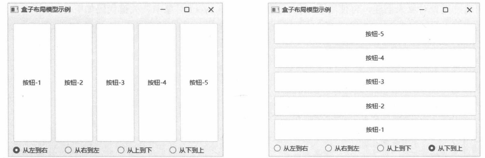
图 7-2 按钮从下到上排列
7.2.2 两个便捷类型
QBoxLayout类在实例化时，通常需要设置组件的排列方向。为了让开发者更方便地运用“盒子”布局，QBoxLayout 派生出两个类——QHBoxLayout 和 QVBoxLayout。
这两个便捷类在实例化后可直接使用，不需要设置排列方向。QHBoxLayout类表示组件沿水平方向排列（从左到右），而QVBoxLayout类则是垂直排列（从上到下）。
下面的例子构建一个自定义窗口类，在__init__ 方法调用时通过BoxType枚举来确定组件的排列方向。如果指定的值是Horizontal，表示水平排列，将使用 QHBoxLayout布局；若值为 Vertical 则是垂直排列，使用 QVBoxLayout 布局。
#自定义的枚举类型
class BoxType(IntEnum):
Horizontal = 1 # 水平方向
Vertical = 2 #垂直方向
#自定义的窗口类
class MyWindow(QWidget):
def __init__(self, boxType: BoxType = BoxType.Horizontal, parent: QWidget = None):
super().__init__(parent)
if boxType == BoxType.Horizontal:
self.layout = QHBoxLayout()
self.setWindowTitle("水平布局")
else:
self.layout = QVBoxLayout()
self.setWindowTitle("垂直布局")
#为当前窗口设置布局
self.setLayout(self.layout)
#在布局中放置6个标签
labels = [
QLabel("羽毛球",self),
QLabel("足球",self),
QLabel("排球",self),
QLabel("篮球",self),
QLabel("乒乓球",self),
QLabel("棒球",self)
]
for lb in labels:
self.layout.addWidget(lb)6个标签组件的布局效果如图7-3和图7-4所示。
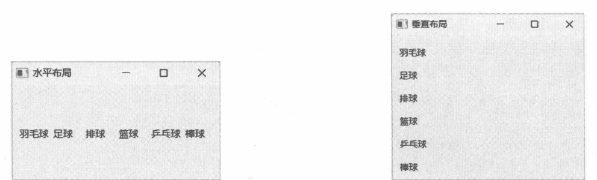
图 7-4 垂直布局
7.2.3 拉伸比例
默认情况下，不管是 QBoxLayout 类还是扩展的 QHBoxLayout、QVBoxLayout 类，为布局子项分配的“盒子”空间都是相等的（每个子项的拉伸比例都是1)，如图7-5所示。
无论子项自身的大小是否会自动拉伸（或收缩），它们所处的“盒子”空间都会按比例拉伸（或收缩)。如图7-6所示，哪怕每个子项的高度只有10像素，可它所在的“盒子”高度仍然按比例拉伸，最终使得子项之间的间距变大。
调用布局对象的setStretch方法可以为指定组件设置拉伸比例。该方法的声明如下：
def setStretch(index: int, stretch: int)index参数用于指定布局中QWidget组件或子布局的索引。例如，第一个组件的索引为0，第二个组件的索引为1，第三个为2，等等。stretch参数设置拉伸比例因子。拉伸因子指子项占用剩余布局空间的份数，例如：
layout.setStretch(0, 2)
layout.setStretch(1, 4)
layout.setStretch(2, 1)
layout.setStretch(3,3)上述代码的含义是：将整个布局空间（高度或宽度）平均分成10份（所有拉伸因子的和，即2+4+1+3），其中第一项占用2份（2/10），第二项占用4份（4/10），第三项占用1份（1/10），第四项占用3份（3/10）。设置上述拉伸比例后，各子项的高度如图7-7所示。
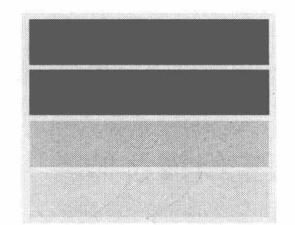
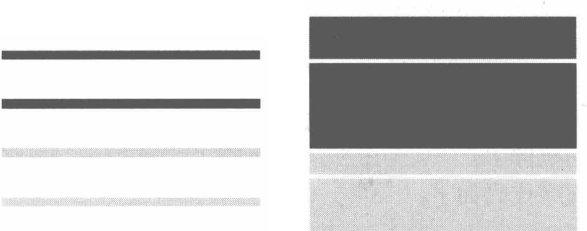
图 7-7 各子项的高度
下面请看一个示例。
from PySide6.QtCore import*
from PySide6.QtGui import*
from PySide6.QtWidgets import*
app = QApplication()
win = QWidget()
win.setWindowTitle("Test")
#水平布局
layout = QHBoxLayout()
win.setLayout(layout)
#向布局添加三个按钮组件
layout.addWidget(QPushButton("布谷鸟"))
layout.addWidget(QPushButton("白文鸟"))
layout.addWidget(QPushButton("鹦鹉"))
#设置子项的拉伸比例
layout.setStretch(0, 1)
layout.setStretch(1, 2)
layout.setStretch(2, 1)
#显示窗口
win.show()
QApplication.exec()上述代码使用QHBoxLayout布局，沿水平方向排列三个按钮。拉伸比例为1:2:1——可用布局空间平均分为4等份（1+2+1），第一个按钮占用1等份空间，第二个按钮占用2等份空间，第三个按钮占用1等份空间。效果如图7-8所示。
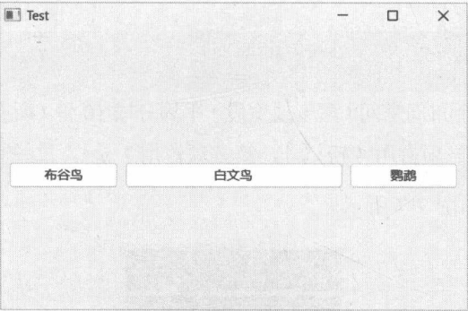
7.2.4 示例：如何避免子项空间被拉伸
有时候并不希望布局中的子项被拉伸，此情况可以调用addStretch方法，向布局空间插入空白项(不可见)，并设定一个拉伸因子。如果布局空间内只添加一个可拉伸的子项，那么拉伸因子设置为0或1即可（不能小于0)。因为这种情况下无论子项占用比例是多少，它都会用尽所有的剩余空间。
addStretch方法总是将空白项追加到布局空间的末尾，若要在指定索引处插入空白项，请使用insertStretch 方法。
本示例正是运用可拉伸空白项的特性，让它消耗完布局内的剩余空间，这样布局空间内其他可见对象就不会自动拉伸了。
关键的程序代码如下：
#创建顶层窗口
window = QWidget()
window.setWindowTitle("Demo")
#创建布局
layout = QVBoxLayout()
window.setLayout(layout)
#创建5个按钮
buttons = [QPushButton("按钮"+ str(x + 1), window) for x in range(5)]
#将按钮添加到布局中
for x in range(5):
layout.addWidget (buttons[x])
#追加空白项
layout.addStretch(1)
#显示窗口
window.show()addStretch方法添加的空白项会追加到QVBoxLayout布局对象的末尾，它会耗尽所有可用的布局空间，使得5个按钮被“挤”到布局的顶部，如图7-9所示。
如果想让按钮排列到窗口下方，可以调用insertStretch方法将空白项插入布局空间的开始位置（索引为0)。例如：
layout.insertStretch(0, 1)此时按钮会被“压”到窗口的底部排列，如图7-10所示。
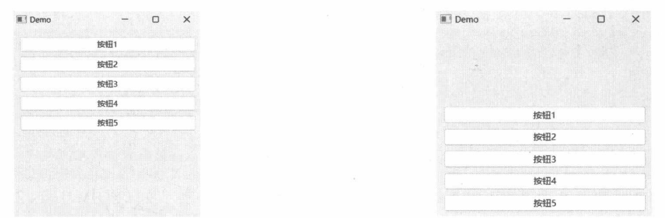
图7-10按钮被“压”到窗口底部
网格布局
网格布局（QGridLayout类）用行和列划分布局空间，参与布局的子项被定位到行列相交所形成的区域内，称为单元格（Cell)。图7-11展示了16个椭圆的布局效果，分为4行4列。
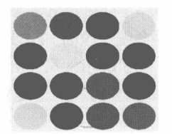
QGridLayout类不需要手动定义行和列的数量，它会根据addWidget、addLayout方法在添加子项时提供的行号和列号来自动计算行和列的数量。行和列编号（索引）以0为基础，即第三列的索引为2。
7.3.1 示例：三行三列的网格布局
本示例将创建三个标签组件（QLabel)，然后使用网格布局，把第一个标签放在第一行第一列，第二个标签放在第二行第二列，第三个标签放在第三行第三列。代码如下：
class TestWin(QWidget):
def __init__(self, parent: QWidget=None):
super().__init__(parent)
#创建网格布局
layout = QGridLayout()
self.setLayout(layout)
#三个标签组件
lb1 = QLabel("A", self)
lb2 = QLabel("B", self)
lb3 = QLabel("C", self)
#开启自动填充背景
lb1.setAutoFillBackground(True)
lb2.setAutoFillBackground(True)
lb3.setAutoFillBackground(True)
#文本居中显示
lb1.setAlignment(Qt.AlignmentFlag.AlignCenter)
lb2.setAlignment(Qt.AlignmentFlag.AlignCenter)
lb3.setAlignment(Qt.AlignmentFlag.AlignCenter)
#为标签设置背景色
palette = QPalette()
palette.setColor(QPalette.ColorRole.Window, QColor('blue'))
palette.setColor(QPalette.ColorRole.WindowText, QColor('white'))
lb1.setPalette(palette)
lb2.setPalette(palette)
lb3.setPalette(palette)
#将三个标签组件添加到布局中
#第一行，第一列
layout.addWidget(lb1, 0, 0)
#第二行，第二列
layout.addWidget(lb2, 1, 1)
#第三行，第三列
layout.addWidget(lb3, 2, 2)在调用 addWidget方法时，用到行、列索引的最大值为2，即3行3列（索引：0、1、2）。QGridLayout对象会自动划分出3行3列，共9个单元格。
最终效果如图7-12所示。
7.3.2 跨行/跨列布局
QGridLayout 类的 addWidget 方法有以下重载：
def addWidget(widget: QWidget, row: int, column: int, rowSpan: int, columnSpan: int, ......)rowSpan参数设置子项连续占用的行数，columnSpan参数设置连续占用的列数。如果 rowSpan或columnSpan参数设置为小于0的值，Qt程序会统一改为-1。此时，行会向下增长，列将向右增长。一直增长到可用空间的最后一行或最后一列。如图7-13所示，第一列有两个矩形，分别放在第一行和第四行；而第二列的矩形放在第一行，但是rowSpan参数设置为-1，于是矩形的高度会向下增长，连续占用4行空间。
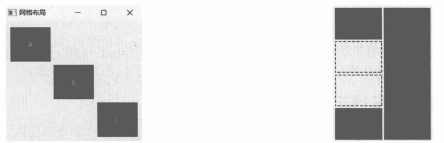
图 7-13 rowSpan 参数为 -1 时布局
7.3.3 示例：跨列布局
本示例将演示网格中的跨列布局。首先定义一个Box类，从QFrame类派生。
class Box(QFrame):
def __init__(self, parent: QWidget = None):
super().__init__(parent)
self.setFrameShape(QFrame.Shape.Box)
pal = QPalette()
#设置前景颜色
pal.setColor(self.foregroundRole(), QColor("deeppink"))
self.setPalette(pal)
#设置边框线条的粗细
self.setLineWidth(2)QFrame的基类是QWidget，其功能是为可视化组件提供边框外观，许多常用的组件类（如QLabel)都派生自QFrame。上述代码通过 setLineWidth 方法设置边框的粗细。边框的颜色用的是调色板中的WindowText 部分的颜色，即前景色，可以通过 foregroundRole 方法直接获取（ColorRole.WindowText是默认值)。
接下来创建三个Box 实例，并布局到QGridLayout中。
#创建顶层窗口
window = QWidget()
window.setWindowTitle("跨列布局")
window.resize(300, 275)
#构建网格布局
layout = QGridLayout(window)
#第一个组件，位于第一行第一列
e1 = Box(window)
layout.addWidget(e1, 0, 0)
#第二个组件，位于第一行第二列
e2 = Box(window)
layout.addWidget(e2, 0, 1)
#第三个组件，位于第二行第一列，跨两列
e3 = Box(window)
layout.addWidget(e3, 1, 0, 1, 2)
......位于第二行第一列的Box对象将占用两列的空间，如图7-14所示。
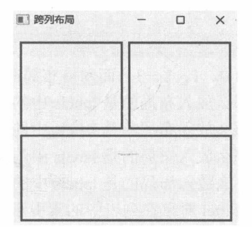
7.3.4 示例：调整行/列的拉伸比例
与QBoxLayout 布局相似，QGridLayout布局也支持拉伸比例。不过，QGridLayout 布局的拉伸比例分为行比例和列比例。行的拉伸比例通过setRowStretch方法调整，其声明如下：
def setRowStretch(row: int, stretch: int)row参数指定要调整的行号（索引从0开始），stretch参数设定比例因子。列的拉伸比例通过setColumnStretch方法调整，声明如下：
def setColumnStretch(column: int, stretch: int)column参数指定要调整的列号（索引基于0)，stretch参数设置比例因子。
本示例将创建8个标签组件，然后依次布局到4行2列的网格中。关键代码如下：
#创建8个标签组件
labels = [
QLabel("第一行第一列", window),
QLabel("第一行第二列", window),
QLabel("第二行第一列", window),
QLabel("第二行第二列", window),
QLabel("第三行第一列", window),
QLabel("第三行第二列", window),
QLabel("第四行第一列", window),
QLabel("第四行第二列", window)
]
for label in labels:
#让标签中的文本居中对齐
label.setAlignment(Qt.AlignmentFlag.AlignCenter)
#设置边框形状
label.setFrameShape(QFrame.Shape.WinPanel)
#设置边框线的宽度
label.setLineWidth(2)
#进行布局
for i in range(4):
#左列
layout.addWidget(labels[i * 2], i, 0)
#右列
layout.addWidget(labels[i * 2 + 1], i, 1)8个 QLabel 实例被存放到1个列表中（labels变量）。布局时，使用了1个 for循环。
for i in range(4):
#左列
layout.addWidget(labels[i * 2], i, 0)
#右列
layout.addWidget(labels[i * 2 + 1], i, 1)这个for循环中变量i的值依次为0、1、2、3，而网格布局需要4行，因此变量i正好对应行号。
- 当行号为0时（第一行)，那么放入布局的是labels中的第一个标签，索引为0；
- 当行号为1时（第二行)，那么放入布局的是labels中的第三个元素，索引为2;
- 当行号为2时（第三行)，那么放入布局的是labels中的第五个元素，索引为4;
- 当行号为3时（第四行)，那么放入布局的是labels中的第七个元素，索引为6。
也就是说，放入每行第一列的QLabel对象在列表中的索引正好是行号的2倍(i×2)。由于网格只用到两列，所以第一列索引为0，第二列为1。放入布局的对象在labels中的索引就是i×2+1。
接下来调整各行的拉伸比例。
layout.setRowStretch(0, 3)
layout.setRowStretch(1, 1)
layout.setRowStretch(2, 1)
layout.setRowStretch(3, 3)上述代码的含义是：将4行的可用空间平均划分为8份（3+1+1+3)，第一、四行各占用3份空间，第二、三行各占用1份空间。
下面的代码调整各列的拉伸比例。
layout.setColumnStretch(0, 2)
layout.setColumnStretch(1, 1)即将所有列的可用空间平均分为3份（2+1)，其中，第一列占用2份空间，第二列占用1份空间。两列的宽度比是2:1。
布局效果如图7-15所示。
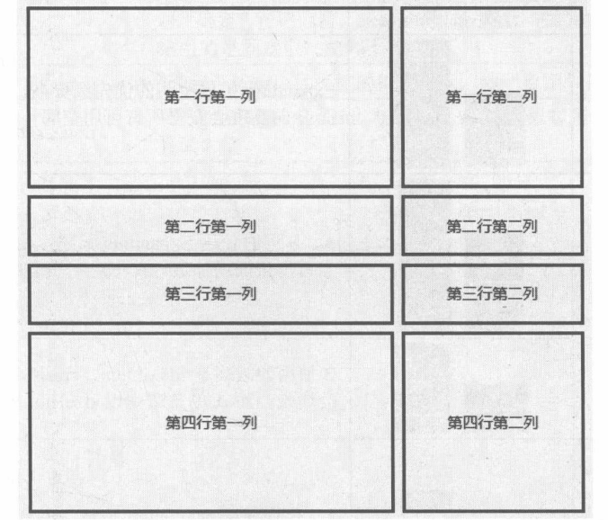
组件的缩放策略
Qt 组件在派生时一般需要重写 sizeHint 方法。在方法内部将计算当前组件实际需要的空间（宽度和高度)，并将计算结果返回。在布局空间中，QSizePolicy类将以sizeHint方法的返回值为参考，自动调整组件的大小。
QSizePolicy.PolicyFlag枚举类型定义了基本的空间调整行为。
- GrowFlag:组件的空间将按需增长，且允许组件获得大于 sizeHint的空间。
- ExpandFlag:不管是否有需要，只要存在可用空间，组件就要扩展其大小。
- ShrinkFlag：在必要情况下，组件可以缩小其空间，并且有可能小于sizeHint。
- IgnoreFlag:忽略 sizeHint返回的结果，组件尽可能扩大其空间。
QSizePolicy.Policy枚举将组合使用 PolicyFlag 枚举的值，定义常用的缩放策略。
- Fixed：组件只使用sizeHint返回的大小，哪怕有更多的布局空间，组件也不会增加其大小。
- Minimum：以sizeHint为最小值，在调整大小时不能小于sizeHint的值。但如果有可用空间，组件仍然会扩展其大小，但优先级比Expanding低。
- Maximum:sizeHint 为最大值，在调整大小时不会超过 sizeHint。但当其他组件需要布局空间时，当前组件的空间会缩小。
- Preferred：预设值（QWidget默认），sizeHint为最佳大小，但在必要时，组件可以扩展空间，也可以缩小空间。
- Expanding:sizeHint是最佳值，但组件会尽可能地获取更多空间，也可以缩小空间。优先级高于 Minimum 和 Preferred。
- MinimumExpanding:sizeHint为最佳值，但组件会尽可能地扩展空间。缩小时不能小于sizeHint。
- Ignored：sizeHint的值被忽略，组件会尽可能地获取更多空间。
缩放策略仅在布局空间中有效，组件之间将通过缩放策略来协调空间分配。不同的缩放策略之间会产生不同的排列效果。具体请参考表7-1。
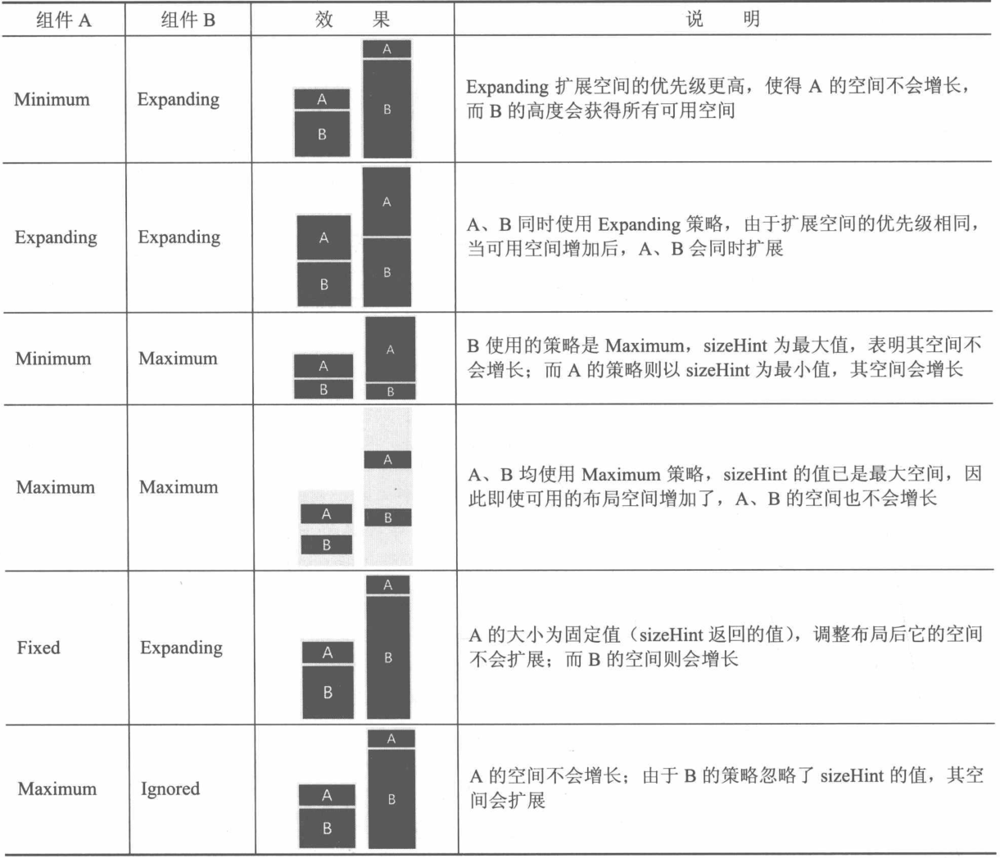
7.4.1 修改缩放策略
QWidget 对象可以调用 setSizePolicy 方法修改缩放策略。该方法有两个重载：
def setSizePolicy(arg: QSizePolicy)
def setSizePolicy(horizontal: QSizePolicy.Policy, vertical: QSizePolicy.Policy)第一个重载是直接将QSizePolicy对象传递给方法；第二个重载是使用Policy枚举的值来传值，分别代表水平方向的缩放策略和垂直方向的缩放策略。
QWidget类默认将水平和垂直方向上的缩放策略设置为Preferred，即组件在需要的时候可以增长或缩减空间，而且会同步进行（同时增长，或同时缩小)。这也是组件在布局类中默认会平均分配空间的原因。
7.4.2 示例：调整按钮的缩放策略
本示例将呈现带有“确定”“取消”按钮的窗口。通过调整按钮组件的缩放策略，使“取消”按钮的宽度固定，“确定”按钮的宽度自动扩展。表7-2中的策略均可选用。
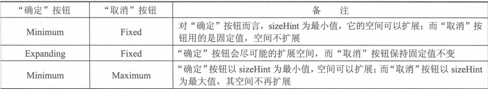
DemoWindow 类的代码如下：
class DemoWindow(QWidget):
def __init__(self, parent: QWidget = None):
super().__init__(parent)
#布局
layout = QHBoxLayout(self)
#两个按钮
btn1 = QPushButton("确定", self)
btn2 = QPushButton("取消", self)
#修改按钮的缩放策略
btn1.setSizePolicy(
QSizePolicy.Policy.Expanding,
QSizePolicy.Policy.Fixed
)
btn2.setSizePolicy(
QSizePolicy.Policy.Fixed,
QSizePolicy.Policy.Fixed
)
#将按钮添加到布局
layout.addWidget(btn1)
layout.addWidget(btn2)上述代码中，setSizePolicy方法采用带两个参数的重载，分别指定水平和垂直方向上的缩放策略。本示例只需要考虑水平方向上的策略即可，垂直方向均为Fixed（使用固定值)。效果如图7-16所示。
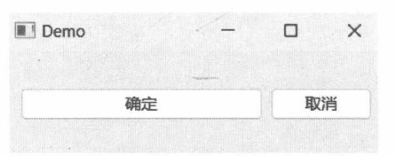
表单布局
表单（QFormLayout）布局也是一种网格布局。它会把网格划分为两列——左列一般使用 QLabel 组件呈现字段文本，右列则放置可编辑组件（如 QLineEdit）。其用法类似于 HTML 中的 <form> 元素。
7.5.1 addRow 方法
表单布局调用addRow方法添加布局子项，每次添加一行。其中包括左列（说明标签）和右列（用于编辑字段的组件)。addRow方法有以下重载。
- 以字符串形式指定字段标签，QFormLayout会自动生成QLabel 组件。
def addRow(labelText: str, field: QWidget)
def addRow(labelText: str, field: QLayout)第一个重载添加QWidget组件来编辑字段，如QLineEdit；第二个重载添加一个布局对象作为字段内容，布局对象内可包含其他组件。
- 以QWidget 组件作为字段的标签。
def addRow(label: QWidget, field: QWidget)
def addRow(label: QWidget, field: QLayout)field参数是字段的内容，与上面两个addRow重载相同。而label参数则可以使用其他 QWidget组件（如 QRadioButton）。
- 只添加单个 QWidget 对象。
def addRow(widget: QWidget)由于只添加了一个对象，因此widget会跨两列布局。
7.5.2 示例：填写收件人信息
本示例将实现一个填写收件人信息的表单。顶层窗口中包含一个QVBoxLayout布局，布局顶部是一个QLabel组件，显示表单标题；接着是一个QFormLayout布局，里面包含需要用户填写的字段信息；底部是一个QHBoxLayout布局，其中包含两个按钮（“提交”和“关闭”)。
具体实现步骤如下。
- 定义TopWindow类，作为应用程序的顶层窗口。
class TopWindow(QWidget):
def __init__(self, parent: QWidget = None):
super().__init__(parent)
......- 创建QVBoxLayout实例，作为窗口的根布局。
rootLayout = QVBoxLayout(self)- 根布局中添加一个QLabel组件，显示表单标题。
lbCap = QLabel("填写收件人信息", self)
#设置字体
font = lbCap.font()
font.setPointSize(16)
font.setFamily("楷体")
lbCap.setFont(font)
#居中对齐
lbCap.setAlignment(Qt.AlignmentFlag.AlignCenter)
#设置缩放策略
lbCap.setSizePolicy(
QSizePolicy.Policy.Expanding,
QSizePolicy.Policy.Maximum
)
rootLayout.addWidget(lbCap)上述代码中，QLabel组件的缩放策略是水平方向上自动扩展，垂直方向上使用sizeHint为最大值，即它的高度不会自动扩展。
- 添加 QFormLayout 布局。
myform = QFormLayout()
rootLayout.addLayout(myform)- QFormLayout 布局中添加 4 个字段。
#第一个字段
self._edt1 = QLineEdit(self)
myform.addRow("省/市（县）：", self._edt1)
#第二个字段
self._edt2 = QLineEdit(self)
myform.addRow("镇/村/街道：", self._edt2)
#第三个字段
self._ckb1 = QCheckBox("移动电话：", self)
self._edt3 = QLineEdit(self)
#连接toggled 信号
self._ckb1.toggled.connect(self._edt3.setEnabled)
myform.addRow(self._ckb1, self._edt3)
#第四个字段
self._ckb2 = QCheckBox("固定电话：",self)
self._edt4 = QLineEdit(self)
self._ckb2.toggled.connect(self._edt4.setEnabled)
myform.addRow(self._ckb2, self._edt4)
#QCheckBox默认处于选中状态
self._ckb1.setChecked(True)
self._ckb2.setChecked(True)第三、四个字段的标签部分是 QCheckBox，当QCheckBox组件被选中时，右边的 QLineEdit组件才能输入内容（由setEnabled方法设置，通过 QCheckBox.Toggled信号触发）。
- 窗口底部放两个按钮。
btnLayout = QHBoxLayout()
rootLayout.addLayout(btnLayout)
self.btnOK = QPushButton("确定", self)
btnLayout.addWidget(self.btnOK)
self.btnClose = QPushButton("关闭", self)
#连接clicked 信号
self.btnOK.clicked.connect(lambda:QMessageBox.information(self,"提示","提交完成"))
self.btnClose.clicked.connect(self.close)
btnLayout.addWidget(self.btnClose)- 以下代码初始化应用程序。
if __name__ == "__main__":
app = QApplication()
win = TopWindow()
win.setWindowTitle("Demo")
win.show()
QApplication.exec()- 运行示例程序，结果如图7-17所示。
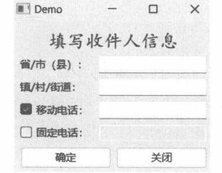
QStackedLayout
QStackedLayout类所构建的布局类似选项卡页面，每次只能呈现一个组件。以下两个方法成员可用于切换组件。
- setCurrentIndex：设置当前活动组件的索引。
- setCurrentWidget:设置当前活动的组件。
上述两个方法任选其一调用即可。
修改 stackingMode 属性（通过 setStackingMode 方法）为 StackAll后，QStackedLayout 会显示所有组件，并且当前活动的组件会显示在最前面。
7.6.1 示例：使用方向按键切换QStackedLayout 中的组件
本示例使用QStackedLayout布局放置三个组件（页面），按键盘上的【→】或【←】键可在各页面中切换。
- 定义MyWindow类，作为顶层窗口。
class MyWindow(QWidget):
def __init__(self, parent: QWidget = None):
super().__init__(parent)
#布局
self.rootlayout = QStackedLayout(self)
#注册快捷键
shortcut1 = QShortcut(QKeySequence(Qt.Key.Key_Left), self, self.onLeft)
shortcut2 = QShortcut(QKeySequence(Qt.Key.Key_Right), self, self.onRight)
#创建三个“页面”
self.makePage1()
self.makePage2()
self.makePage3()QShortcut类用于创建快捷键，实例化时只要将QShortcut 对象添加到当前窗口类的 Qt 对象树中即可，以达到自动释放资源的目的。QShortcut对象设置的快捷键是左、右方向键，被激活时将分别调用onLeft 和 onRight 方法。
- 下面的代码实现 onLeft、onRight 方法。
def onLeft(self):
#获取 QStackedLayout 的当前索引
index = self.rootlayout.currentIndex()
#减去1
index -= 1
#判断索引是否小于0
if index < 0:
index = 0
#设置当前索引
self.rootlayout.setCurrentIndex(index)
def onRight(self):
#获取当前索引
i = self.rootlayout.currentIndex()
#加1
i += 1
#判断索引是否超出范围
if i > self.rootlayout.count()-1:
i = self.rootlayout.count()- 1
#设置当前索引
self.rootlayout.setCurrentIndex(i)- 下面三个方法分别用于创建QStackedLayout布局中的三个组件。
def makePage1(self):
panel = QWidget(self)
#两个标签
lb1=QLabel("页面 A", panel)
lb2=QLabel("你好，世界", panel)
#两种字体
font1 = QFont("隶书", 36)
font2 = QFont("仿宋", 12)
lb1.setFont(font1)
lb2.setFont(font2)
#布局
vlay = QVBoxLayout(panel)
vlay.addWidget(lb1)
vlay.addWidget(lb2)
vlay.addStretch(1)
self.rootlayout.addWidget(panel)
def makePage2(self):
lb = QLabel("页面 B", self)
#设置字体
font = QFont("宋体", 36)
lb.setFont(font)
self.rootlayout.addWidget(lb)
def makePage3(self):
wg = QWidget(self)
wg.setAutoFillBackground(True)
#绘制自定义图像
pxmap = QPixmap(300, 200)
pxmap.fill(QColor('green'))
painter = QPainter()
painter.begin(pxmap)
#设置字体
painter.setFont(QFont("楷体", 36))
#设置画笔
painter.setPen(QPen(QColor("white")))
#绘制文本
painter.drawText(pxmap.rect(), Qt.AlignmentFlag.AlignTop, "页面 C")
painter.end()
pal = QPalette()
#创建画刷，自定义图像被用作画刷的纹理
mybrush = QBrush(pxmap)
#设置背景画刷
pal.setBrush(QPalette.ColorRole.Window, mybrush)
wg.setPalette(pal)
self.rootlayout.addWidget(wg)- 运行示例后，默认显示“页面A”，如图7-18所示。
- 按下【→】键，此时显示“页面B”，如图7-19所示。
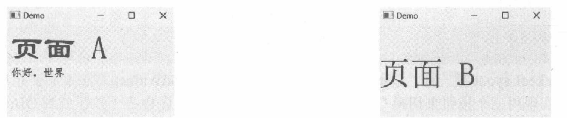
图 7-19 显示第二个组件
- 按下【←】键，回到“页面A”。
7.6.2 示例：使用 QStackedWidget 组件
QStackedWidget属于 Qt可视化组件，它的功能与 QStackedLayout 相同，使用方法也相似。本示例将向 QStackedWidget 组件依次添加 QCheckBox、QLabel 和 QPushButton 组件，同一时刻只显示一个组件，通过三个按钮来切换。
下面的代码定义顶层窗口类DemoWin。
class DemoWin(QWidget):
def __init__(self, parent: QWidget = None):
super().__init__(parent)
#布局
rootLayout = QVBoxLayout()
self.setLayout(rootLayout)
#三个按钮
btn1 = QPushButton("复选按钮",self)
btn2 = QPushButton("标签", self)
btn3 = QPushButton("普通按钮", self)
#为按钮设置大小调整策略
sizePolicy = QSizePolicy(
QSizePolicy.Policy.Fixed,
QSizePolicy.Policy.Maximum
)
btn1.setSizePolicy(sizePolicy)
btn2.setSizePolicy(sizePolicy)
btn3.setSizePolicy(sizePolicy)
#给按钮分组
btnGroup = QButtonGroup(self)
btnGroup.addButton(btn1, 0)
btnGroup.addButton(btn2, 1)
btnGroup.addButton(btn3, 2)
#为按钮布局
btnlayout = QHBoxLayout()
btnlayout.addWidget(btn1)
btnlayout.addWidget(btn2)
btnlayout.addWidget(btn3)
rootLayout.addLayout(btnlayout)
#初始化 QStackedWidget 组件
stackedWg = QStackedWidget(self)
#第一页：放一个复选按钮
stackedWg.addWidget(QCheckBox("这是复选按钮"))#第二页，放一个标签
stackedWg.addWidget(QLabel("这是标签"))
#第三页，放一个普通按钮
stackedWg.addWidget(QPushButton("这是普通按钮"))#添加到根布局中
rootLayout.addWidget(stackedWg)
#将 QButtonGroup 对象的 idClicked 信号连接到QStackedWidget 对象的 setCurrentIndex
#方法上
btnGroup.idClicked.connect(stackedWg.setCurrentIndex)与 QStackedLayout 类一样，QStackedWidget 组件也是调用 addWidget 方法添加要布局的组件的。
本示例实现用三个按钮来切换 QStackedWidget 视图的原理是先将三个按钮放到 QButtonGroup中，再把 QButtonGroup 对象的 idClicked 信号连接到 QStackedWidget 组件的 setCurrentIndex 方法上。只要有 idClicked 信号发出，setCurrentIndex 方法就会被调用，并且按钮的 id 值会传递给 setCurrentIndex 方法的参数，以此指定要呈现组件的索引。
示例运行后，默认显示的是复选按钮（QCheckBox)，如图7-20所示。
单击“标签”按钮，将显示标签组件，如图7-21所示。
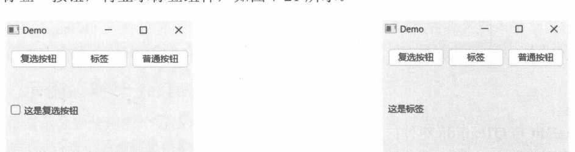
图 7-21 显示标签组件